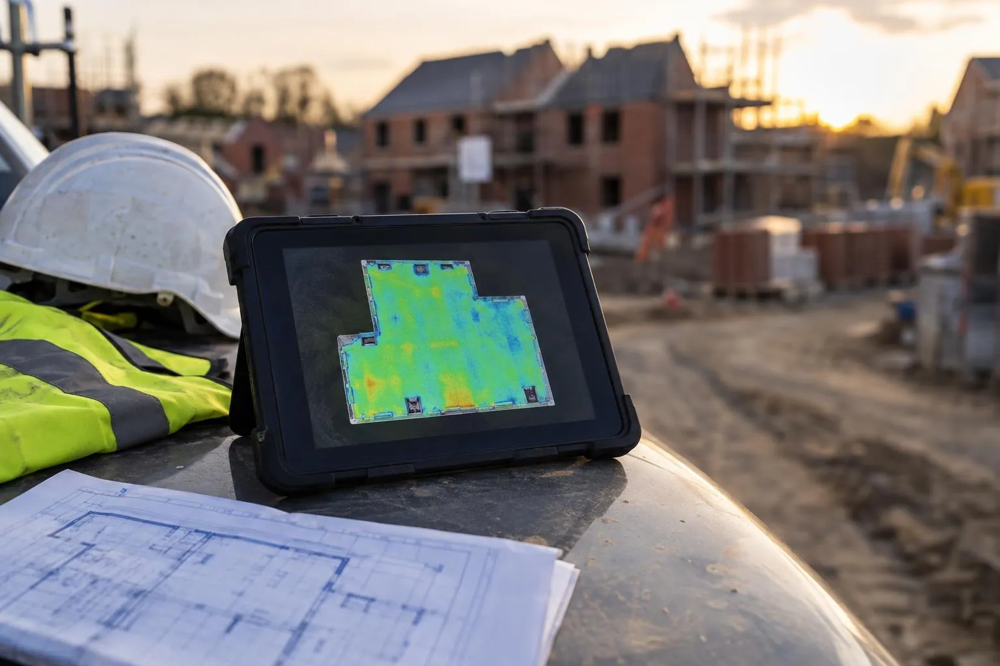

Road & sub-base scanning
Formation, sub-base and binder checked against design levels across the full width of the road, with a next-day heat-map and pass/fail.
Services
Every service uses the same survey-grade scanner and the same idea: measure what is really there, compare it with what should be there, and tell you clearly. Pick the one that matches your job.
For groundwork contractors, housebuilders and surfacing teams who need proof the work is right before it is covered.
Formation, sub-base and binder checked against design levels across the full width of the road, with a next-day heat-map and pass/fail.
Scans before and after surfacing, differenced to show the thickness laid at every point. No cores, full coverage.
Slab flatness, brickwork to the house-type drawing and drain collar positions, one pass/fail page per plot.
For homeowners, kitchen and garden designers, architects and builders who need accurate existing drawings before they design or price.
Rooms, whole houses and elevations scanned for kitchens, extensions and interiors. Plans, elevations and point cloud.
Every level, wall, step, tree and drain in the garden, with a scaled levels plan and 3D model for your designer.
Every job is scanned with a Trimble X7, a survey-grade terrestrial laser scanner that levels and calibrates itself at each set-up. The manufacturer specifies 2.4 mm 3D point accuracy at 10 m and a range of up to 80 m.
Every report states the registration error for that job, which is how well the individual scans tie together. If the data isn't tight enough for the check you need, we tell you rather than hand over a number we wouldn't stand behind. How our process and accuracy checks work.

If you're building a road, start with a road and sub-base scan, and add a tarmac depth survey if thickness matters. If you're building houses, plot and oversite scanning. If you're designing or building something in an existing home or garden, a measured building survey or a garden scan.
Yes, and it's cheaper. Roads and plots on the same site are often scanned on the same day, and a house and garden can be surveyed together for an extension with landscaping.
Yes. Road and plot scanning is mostly for contractors and housebuilders. Measured building surveys and garden scans are booked by homeowners, designers, architects and builders alike.
Send the drawing, the location and when you need it. We reply the same working day with a fixed price.